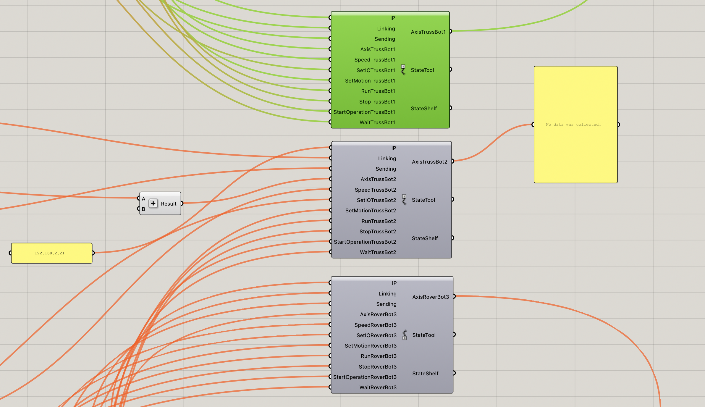
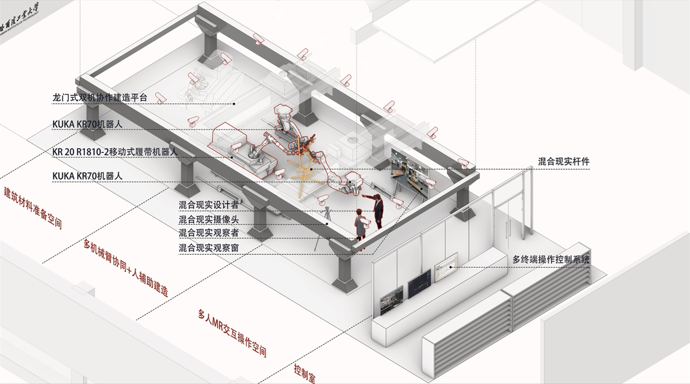
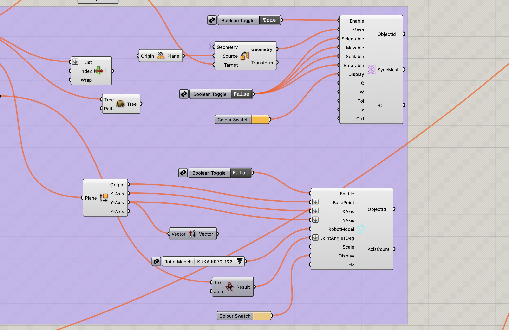
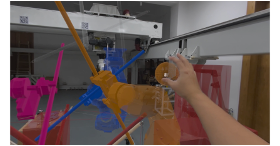
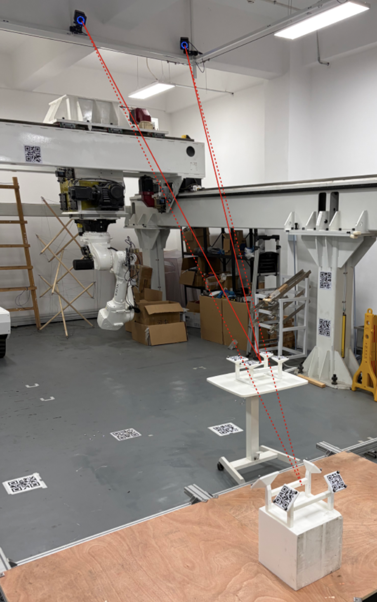
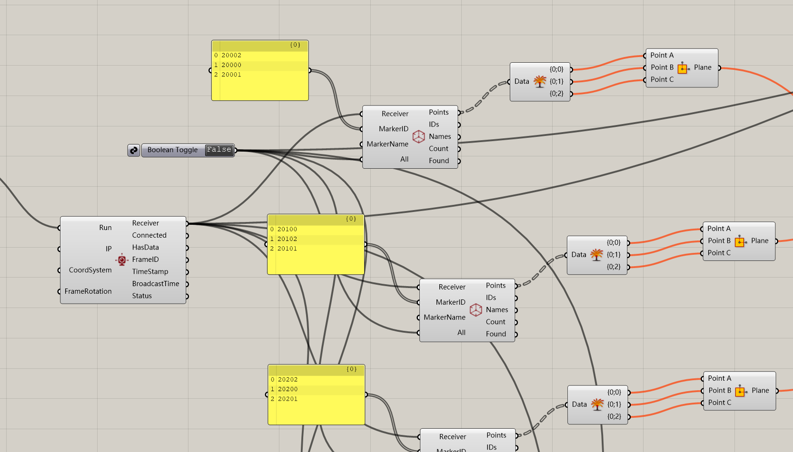

Multi-Robot Collaborative Control
Task allocation, path simulation, and coordinated actions across stationary and mobile robotic systems.

 Weichen Zhang
Weichen ZhangCoordinated control, motion capture, and XR visualization in one construction environment.

The platform brings a gantry-mounted dual-robot system, a tracked mobile manipulator, motion capture, mixed-reality devices, and computational design tools into the same laboratory workflow.
Custom Grasshopper and C# components exchange robot states, PLC data, navigation commands, and spatial tracking information. The result is a shared technical foundation for multi-robot construction and human–robot interaction experiments.
The platform is organized around four connected modules.
Task allocation, path simulation, and coordinated actions across stationary and mobile robotic systems.

Full-scale visualization of construction geometry, robot states, and assembly guidance in the physical laboratory.


Real-time spatial tracking of people, components, and shared reference frames in the construction workspace.


Multimodal perception, task interpretation, and high-level planning for coordinated robotic construction.